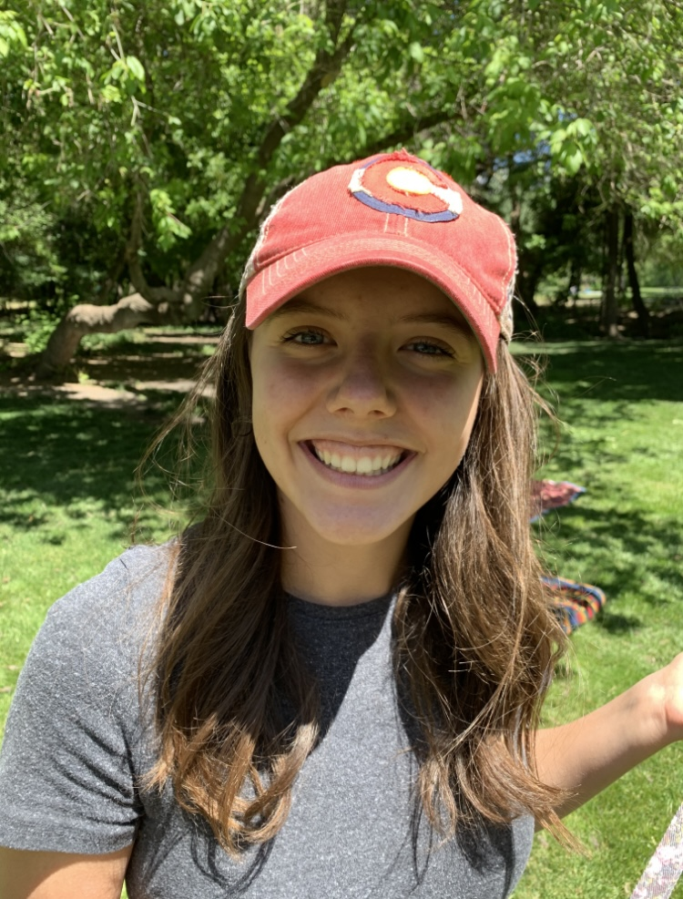
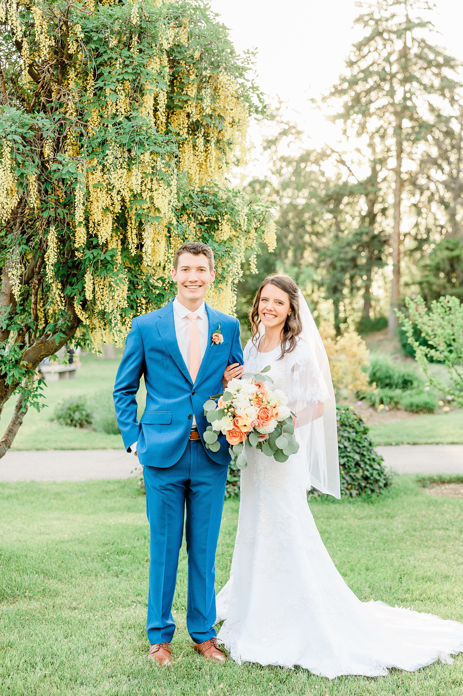

Here's Me!
Hi! My name is Madison Macfarlane and I am a student at Brigham Young University. I graduated from Provo High School in 2018 and since then I've been at BYU and did 18 months of voluntary service for the Church of Jesus Christ of Latter-day Saints in both Guatemala and Colorado.
Meet My Family

I am the oldest of four kids. My parents met in middle school and dated a little bit in high school, but it wasn't until after high school and into college that they seriously dated and decided to get married. I have one sister doing voluntary service for the church in Ecuador right now! Then my two younest siblings will both be attending Provo High next year.
Nate & Maddie
Little did I know, but last August I met my favorite person! We actually met on a double date, but both of us were with different people. Then a month later Nate called me and asked me out! We started dating and began exclusivly dating in October. We've had a blast and in March we decided we didn't want anyone else! Nate and I will be getting married in the Payson, UT temple on June 18th, 2022! Beyond excited to start our lifetime of learning and growing together!
Things that make me happy!
I am a huge fan of all things outdoors! I love to adventure and go on hikes, I love to play sports, and I love going on drives. I am a huge fan of MotoGP (bullet bike motorcycle racing). I've never personally riden a motorcycle, but I would love to give it a try one day! I enjoy sewing and doing crafts. My favorite foods are Indian, Thai and Sushi. These are just a few of my favorite things!
This is a favorite video of mine, and I hope it makes you smile like it does for me!